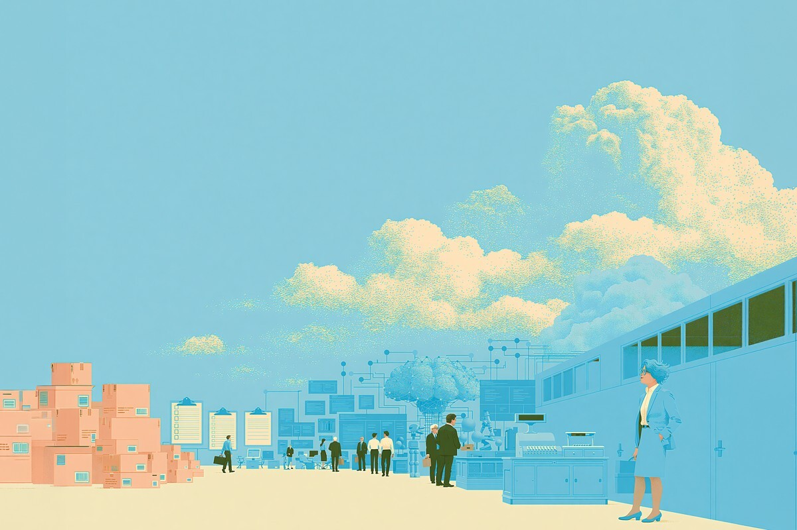
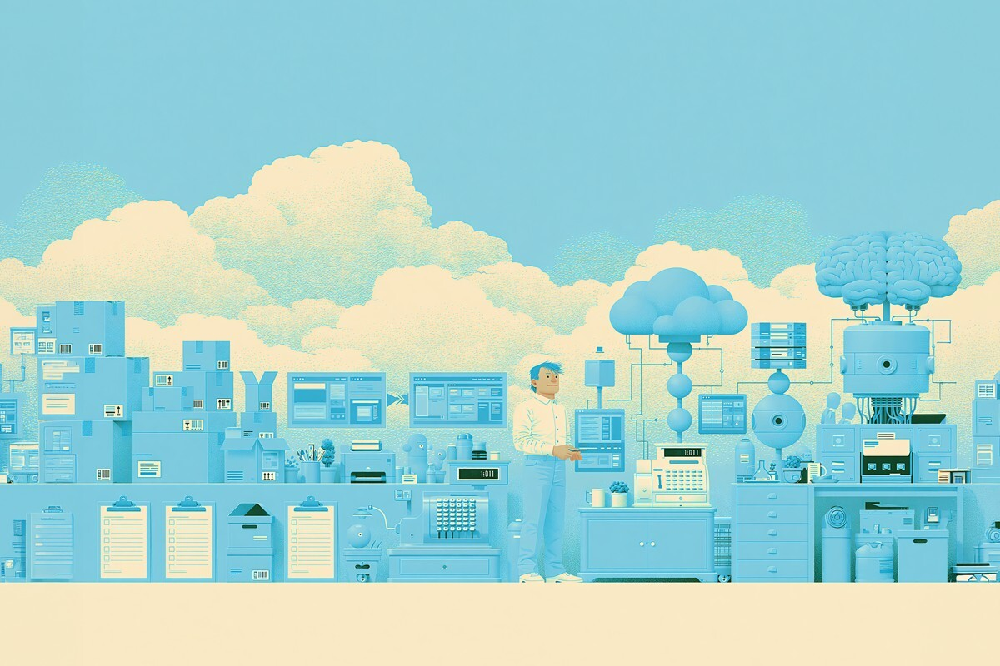
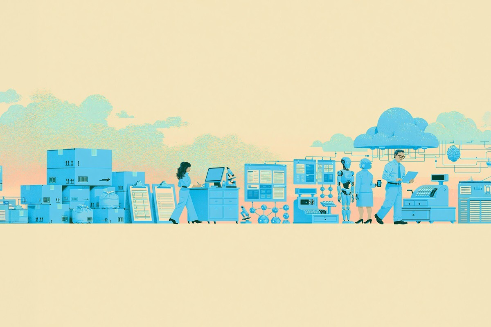

Chile se prepara para el trabajo del futuro
¿Pero cuál es realmente ese futuro?
¿Pero cuál es realmente ese futuro?

Si últimamente has abierto LinkedIn, probablemente lo has visto: parece que todos hablan del “futuro del trabajo”.
Que hay que aprender inteligencia artificial. Que hay que mejorar las habilidades digitales. Que aparecen cargos con nombres que hace años ni siquiera existían (y que, seamos honestos, algunos todavía no sabemos muy bien qué hacen).
Y uno queda pensando: ¿será que tengo que subirme a esta ola antes de quedarme atrás? Pero después abres un portal de empleo y la película cambia un poco.
Porque mientras la conversación habla de trabajos que parecen sacados del futuro, las vacantes reales muestran otro Chile.

Hoy es difícil escapar de la conversación sobre inteligencia artificial. Está en las empresas, en las universidades, en cursos online y hasta en las conversaciones de amigos.
Y no es solo moda. La IA ya está ayudando a escribir, analizar y automatizar tareas que antes podían tomar horas.
Pero hay algo que a veces se nos olvida: no todos los trabajos están cambiando al mismo ritmo. El futuro no llega igual a todas las personas ni a todas las industrias.

Los informes de tendencias laborales hablan de ingenieros, especialistas digitales y nuevos perfiles ligados a tecnología.
Pero cuando revisamos dónde están las mayores cantidades de vacantes en Chile, aparecen trabajos mucho más cotidianos: logística, ventas, seguridad y otros roles presenciales.
Y ojo, eso no significa que sean trabajos “del pasado”.
Al contrario: son los que permiten que la vida funcione todos los días. Que un pedido llegue, que un supermercado opere o que un servicio esté disponible cuando lo necesitamos.
A veces estamos tan pendientes de lo que viene que se nos olvida mirar quién está sosteniendo el presente.

Lo interesante es que las personas tampoco están viendo este cambio desde lejos.
Según el Workmonitor 2026 de Randstad, el 74% de los trabajadores chilenos dice sentirse confiado usando IA en su trabajo. O sea, el miedo no es el único protagonista de esta historia: también hay curiosidad y ganas de adaptarse.
Probablemente, el futuro del trabajo no será un mundo donde todos terminemos trabajando con robots o desde una oficina completamente digital.
Será algo mucho más mezclado: personas usando nuevas herramientas, otras aprendiendo poco a poco y muchas haciendo trabajos que seguirán siendo necesarios, aunque cambien con el tiempo.
Al final, quizás el desafío no es descubrir cuál será “el trabajo del futuro”, sino entender que ese futuro ya empezó. Solo que, como muchas cosas en la vida, no está llegando igual para todos.
 Finanzas
FinanzasChile no está en el Mundial 2026. Ya lo sabemos, ya dolió, ya hicimos memes tristes y nos resignamos a ver la Copa del Mundo desde la casa.
 Finanzas
FinanzasHace casi dos años me vine a vivir a Italia y llegué con una idea muy instalada en la cabeza: que todo iba a ser mucho más caro que en…
Atrás han quedado los tiempos donde los vuelos se compraban con agencias de turismo. En las últimas décadas y con la modernización de los…